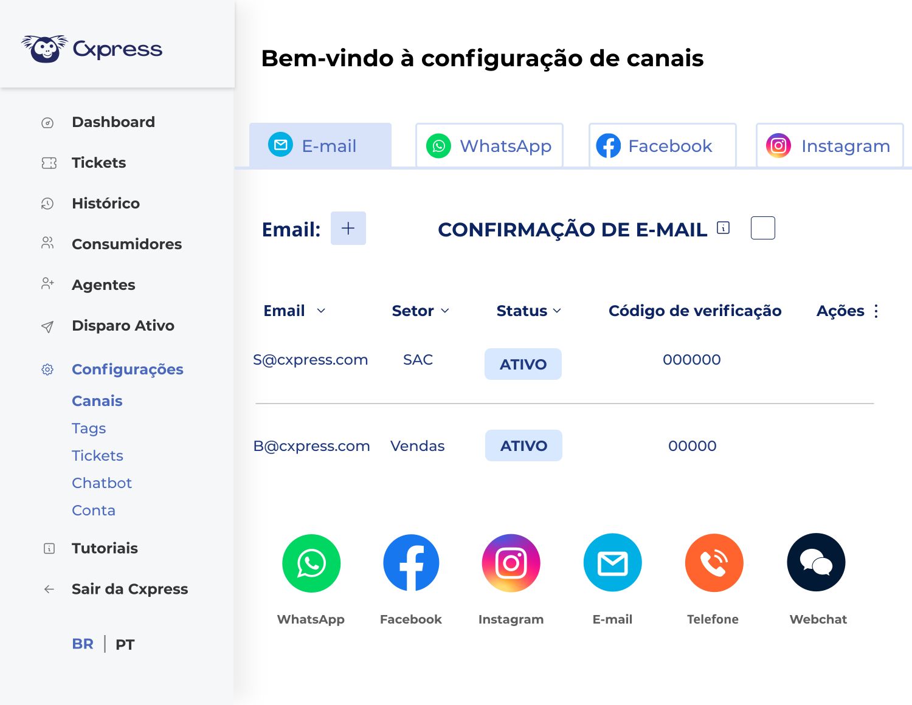
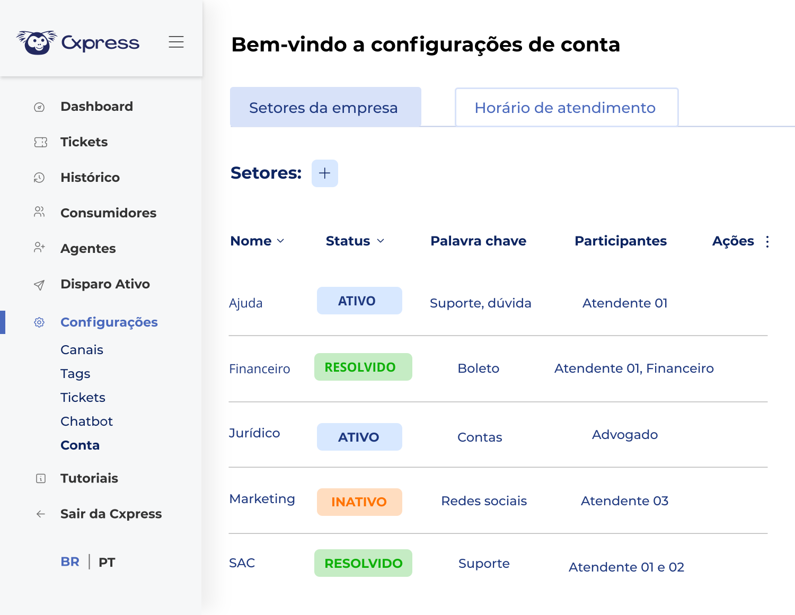

Economia de tempo
Com a Cxpress, centralize todas as conversas e elimine a troca entre plataformas, economizando tempo para sua equipe.
Centralize e Automatize o Atendimento no WhatsApp com a Cxpress. Transforme conversas em resultados com uma plataforma oficial do WhatsApp, completa para gestão, triagem e automação do atendimento.

E nós te mostramos o porquê:
Com a Cxpress, centralize todas as conversas e elimine a troca entre plataformas, economizando tempo para sua equipe.
Automatize respostas com IA para dúvidas frequentes, garantindo satisfação com respostas instantâneas.
Com a API oficial do WhatsApp, acesse recursos como mensagens em massa, automações personalizadas e relatórios detalhados.
14%
Aumento de demandas resolvidas por hora.*
9%
Redução do tempo médio de resolução via chat.*
25%
Redução do desgaste dos atendentes com alto volume de solicitações.
45%
Aumento da produtividade com IA generativa.**
*Pesquisa realizada pelo National Bureau of Economic Research (NBER), com mais de 5 mil agentes de atendimento ao cliente, sobre os resultados da aplicação de inteligência artificial generativa aos processos de suporte das empresas.
**Estimativas da McKinsey, consultoria empresarial norte-americana.
01
Centralize e organize as interações de vários canais, otimize a triagem e reduza o volume de atendimentos, proporcionando mais eficiência à sua equipe.

02
Amplie seu atendimento para 24/7 com Inteligência Artificial que responde ao primeiro contato de visitantes e clientes usando linguagem natural.
03
Tenha uma visão completa e integrada do seu cliente, centralizando interações de diferentes canais em um único histórico.

04
Distribua tickets (registros) de atendimento automaticamente ou manualmente para setores e agentes específicos, simplificando seus processos.

05
Deixe as planilhas para trás! Transforme suas estatísticas de atendimento em painéis intuitivos.

A Cxpress é uma plataforma na nuvem que unifica e automatiza os canais de atendimento da sua empresa. WhatsApp, Redes Sociais, E-mail e Telefone juntos oferecem uma visão única e simplificada da interação com o cliente, desde o primeiro contato até a resolução do caso.
O uso da Inteligência Artificial da Cxpress para automação das primeiras interações em linguagem natural e a gestão de filas otimizam a produtividade das equipes de atendimento.
Para conseguir usar a ferramenta é necessário ter um site ativo e um colaborador responsável pela administração da plataforma.
Não. A IA da Cxpress realiza apenas o primeiro nível de atendimento (N1), respondendo a perguntas sobre serviços e produtos. Um colaborador humano deve estar disponível para questões mais complexas que o Agente Inteligente não saiba responder ou quando o cliente desejar falar com um atendente humano.
Sim, é possível.
Podem ser integrados de forma nativa o WhatsApp, e-mail, redes sociais (Facebook, Instagram), telefone e chat do site.
Sim, é possível integrar com sistemas de CRM, porém é necessário passar por uma análise prévia da nossa equipe técnica para garantir que tudo funcione perfeitamente.
Explore nossa plataforma na prática e obtenha uma avaliação gratuita da sua operação de atendimento com a orientação de nossos especialistas.
Preencha os dados e continue a conversa com um especialista no WhatsApp.
Pedido enviado. Abrimos a conversa com um especialista numa nova aba. Se ela não abriu, toque aqui.
Carregando o formulário…